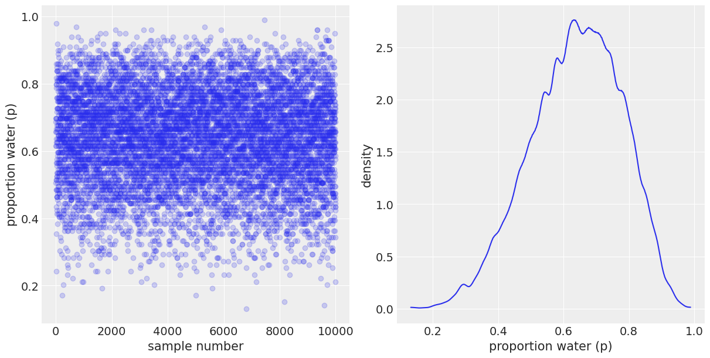
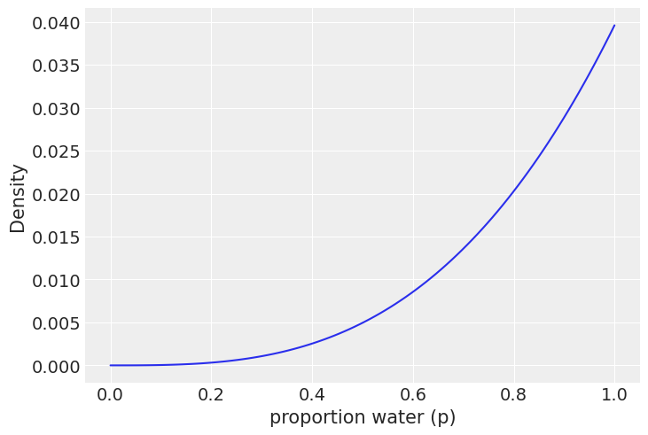
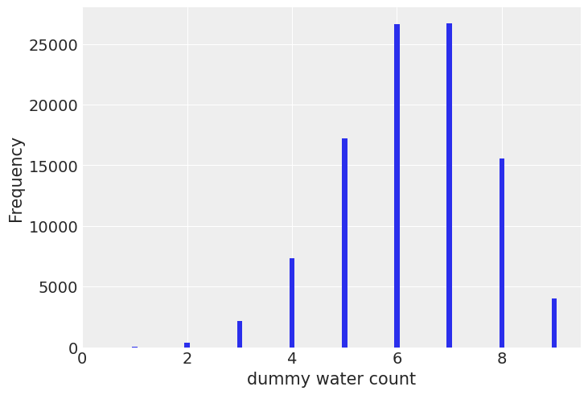

3 Sampling the Imaginary#
import arviz as az
import matplotlib.pyplot as plt
import numpy as np
import pandas as pd
import pymc as pm
import scipy.stats as stats
RANDOM_SEED = 8927
np.random.seed(RANDOM_SEED)
az.style.use("arviz-darkgrid")
Code 3.1#
\[Pr(vampire|positive) = \frac{Pr(positive|vampire) Pr(vampire)} {Pr(positive)}\]
\[Pr(positive) = Pr(positive|vampire) Pr(vampire) + Pr(positive|mortal) (1 − Pr(vampire))\]
PrPV = 0.95
PrPM = 0.01
PrV = 0.001
PrP = PrPV * PrV + PrPM * (1 - PrV)
PrVP = PrPV * PrV / PrP
PrVP
0.08683729433272395
Code 3.2 - 3.5#
We are going to use the same function we use on chapter 2 (code 2.3)
def uniform_prior(grid_points):
"""
Returns Uniform prior density
Parameters:
grid_points (numpy.array): Array of prior values
Returns:
density (numpy.array): Uniform density of prior values
"""
return np.repeat(5, grid_points)
def truncated_prior(grid_points, trunc_point=0.5):
"""
Returns Truncated prior density
Parameters:
grid_points (numpy.array): Array of prior values
trunc_point (double): Value where the prior is truncated
Returns:
density (numpy.array): Truncated density of prior values
"""
return (np.linspace(0, 1, grid_points) >= trunc_point).astype(int)
def double_exp_prior(grid_points):
"""
Returns Double Exponential prior density
Parameters:
grid_points (numpy.array): Array of prior values
Returns:
density (numpy.array): Double Exponential density of prior values
"""
return np.exp(-5 * abs(np.linspace(0, 1, grid_points) - 0.5))
def binom_post_grid_approx(prior_func, grid_points=5, success=6, tosses=9):
"""
Returns the grid approximation of posterior distribution with binomial likelihood.
Parameters:
prior_func (function): A function that returns the likelihood of the prior
grid_points (int): Number of points in the prior grid
successes (int): Number of successes
tosses (int): number of tosses
Returns:
p_grid (numpy.array): Array of prior values
posterior (numpy.array): Likelihood (density) of prior values
"""
# define grid
p_grid = np.linspace(0, 1, grid_points)
# define prior
prior = prior_func(grid_points)
# compute likelihood at each point in the grid
likelihood = stats.binom.pmf(success, tosses, p_grid)
# compute product of likelihood and prior
unstd_posterior = likelihood * prior
# standardize the posterior, so it sums to 1
posterior = unstd_posterior / unstd_posterior.sum()
return p_grid, posterior
p_grid, posterior = binom_post_grid_approx(
uniform_prior, grid_points=100, success=6, tosses=9
)
samples = np.random.choice(p_grid, p=posterior, size=int(1e4), replace=True)
_, (ax0, ax1) = plt.subplots(1, 2, figsize=(12, 6))
ax0.plot(samples, "o", alpha=0.2)
ax0.set_xlabel("sample number")
ax0.set_ylabel("proportion water (p)")
az.plot_kde(samples, ax=ax1)
ax1.set_xlabel("proportion water (p)")
ax1.set_ylabel("density")
Text(0, 0.5, 'density')

Code 3.6#
sum(posterior[p_grid < 0.5])
0.17183313110747472
Code 3.7#
sum(samples < 0.5) / 1e4
0.1699
Code 3.8#
sum((samples > 0.5) & (samples < 0.75)) / 1e4
0.6089
Code 3.9#
np.percentile(samples, 80)
0.7676767676767677
Code 3.10#
np.percentile(samples, [10, 90])
array([0.45454545, 0.81818182])
Code 3.11#
p_grid, posterior = binom_post_grid_approx(
uniform_prior, grid_points=100, success=3, tosses=3
)
plt.plot(p_grid, posterior)
plt.xlabel("proportion water (p)")
plt.ylabel("Density")
Text(0, 0.5, 'Density')

Code 3.12#
samples = np.random.choice(p_grid, p=posterior, size=int(1e4), replace=True)
np.percentile(samples, [25, 75])
array([0.70707071, 0.93939394])
Code 3.13#
az.hdi(samples, hdi_prob=0.5)
array([0.84848485, 1. ])
Code 3.14#
p_grid[posterior == max(posterior)]
array([1.])
Code 3.15#
stats.mode(samples)[0]
/var/folders/py/n14256yd5r5ddms88x9bvsv40000gn/T/ipykernel_52713/3920105227.py:1: FutureWarning: Unlike other reduction functions (e.g. `skew`, `kurtosis`), the default behavior of `mode` typically preserves the axis it acts along. In SciPy 1.11.0, this behavior will change: the default value of `keepdims` will become False, the `axis` over which the statistic is taken will be eliminated, and the value None will no longer be accepted. Set `keepdims` to True or False to avoid this warning.
stats.mode(samples)[0]
array([0.96969697])
Code 3.16#
np.mean(samples), np.median(samples)
(0.8039616161616162, 0.8484848484848485)
Code 3.17#
sum(posterior * abs(0.5 - p_grid))
0.31626874808692995
Code 3.18 and 3.19#
loss = [sum(posterior * abs(p - p_grid)) for p in p_grid]
p_grid[loss == min(loss)]
array([0.84848485])
Code 3.20#
stats.binom.pmf(range(3), n=2, p=0.7)
array([0.09, 0.42, 0.49])
Code 3.21#
stats.binom.rvs(n=2, p=0.7, size=1)
array([1])
Code 3.22#
stats.binom.rvs(n=2, p=0.7, size=10)
array([2, 2, 1, 1, 1, 2, 2, 0, 2, 1])
Code 3.23#
dummy_w = stats.binom.rvs(n=2, p=0.7, size=int(1e5))
[(dummy_w == i).mean() for i in range(3)]
[0.09088, 0.42142, 0.4877]
Code 3.24, 3.25 and 3.26#
dummy_w = stats.binom.rvs(n=9, p=0.7, size=int(1e5))
# dummy_w = stats.binom.rvs(n=9, p=0.6, size=int(1e4))
# dummy_w = stats.binom.rvs(n=9, p=samples)
bar_width = 0.1
plt.hist(dummy_w, bins=np.arange(0, 11) - bar_width / 2, width=bar_width)
plt.xlim(0, 9.5)
plt.xlabel("dummy water count")
plt.ylabel("Frequency")
Text(0, 0.5, 'Frequency')

Code 3.27#
p_grid, posterior = binom_post_grid_approx(
uniform_prior, grid_points=100, success=6, tosses=9
)
np.random.seed(100)
samples = np.random.choice(p_grid, p=posterior, size=int(1e4), replace=True)
Code 3.28#
# fmt: off
birth1 = np.array([1, 0, 0, 0, 1, 1, 0, 1, 0, 1, 0, 0, 1, 1, 0, 1, 1, 0, 0, 0, 1, 0, 0, 0, 1, 0, 0, 0, 0, 1, 1, 1, 0, 1, 0, 1, 1, 1, 0, 1, 0, 1, 1, 0, 1, 0, 0,
1, 1, 0, 1, 0, 0, 0, 0, 0, 0, 0, 1, 1, 0, 1, 0, 0, 1, 0, 0, 0, 1, 0, 0, 1, 1, 1, 1, 0, 1, 0, 1, 1, 1, 1, 1, 0, 0, 1, 0, 1, 1, 0, 1, 0, 1, 1, 1, 0, 1, 1, 1, 1])
birth2 = np.array([0, 1, 0, 1, 0, 1, 1, 1, 0, 0, 1, 1, 1, 1, 1, 0, 0, 1, 1, 1, 0, 0, 1, 1, 1, 0,
1, 1, 1, 0, 1, 1, 1, 0, 1, 0, 0, 1, 1, 1, 1, 0, 0, 1, 0, 1, 1, 1, 1, 1, 1, 1, 1, 1, 1, 1, 1, 1,
1, 1, 1, 0, 1, 1, 0, 1, 1, 0, 1, 1, 1, 0, 0, 0, 0, 0, 0, 1, 0, 0, 0, 1, 1, 0, 0, 1, 0, 0, 1, 1,
0, 0, 0, 1, 1, 1, 0, 0, 0, 0])
# fmt: on
Code 3.30#
sum(birth1) + sum(birth2)
111
%watermark -n -u -v -iv -w
UsageError: Line magic function `%watermark` not found.